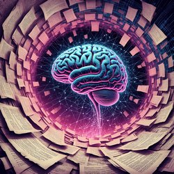

Эволюция языковых моделей: от чат-ботов до ИИ будущего
Статья составлена в начале 2025 года. Следите за развитием технологий, чтобы не упустить новые достижения.
Языковые модели — один из самых динамичных разделов искусственного интеллекта. Они прошли путь от простых программ, выдающих шаблонные ответы, до сложных систем, таких как GPT-4. Давайте проследим ключевые этапы развития и разберём, какие модели и технологии стояли у истоков современного NLP.
Первые шаги: чат-боты ELIZA и Parry (1960–1990-е)
ELIZA (1966) — один из первых чат-ботов, имитирующий психотерапевта с помощью простых правил. Она показала, что компьютеры могут взаимодействовать с людьми на языке, пусть и без настоящего понимания текста.
Parry (1972) стал следующим шагом: имитировал поведение человека с параноидным расстройством и прошёл тест Тьюринга с результатом около 52 %.
Статистические методы и ALICE (1990–2000-е)
В 1990-е появились системы на основе статистики и разметки (AIML). ALICE (1995) поддерживала разговор по заранее заданным шаблонам и дала возможность другим разработчикам создавать собственных ботов.
Нейронные сети и Word2Vec/Seq2Seq (2010-е)
- Word2Vec (2013): модель векторизации слов, сохраняющая семантические связи.
- Seq2Seq (2014): архитектура, позволившая машинному переводу и генерации текста.
Появление Siri, Google Assistant и Алисы показало прикладное применение нейронных сетей в чат-ботах.
Transformer и BERT/GPT-семейство (2017–2025)
В 2017 г. Google представил Transformer, который использует механизм внимания для учёта контекста. На его базе появились:
- BERT (2018): анализ текста в обоих направлениях.
- GPT-1…GPT-4.1 (2018–2025): генеративные модели с от сотен миллионов до триллионов параметров.
Будущее: мультимодальность, персонализация и XAI
Ключевые тренды на 2025 год и далее:
- мультимодальные модели (текст + изображения + видео);
- персонализация ответов и «память» моделей;
- Explainable AI для прозрачных решений.